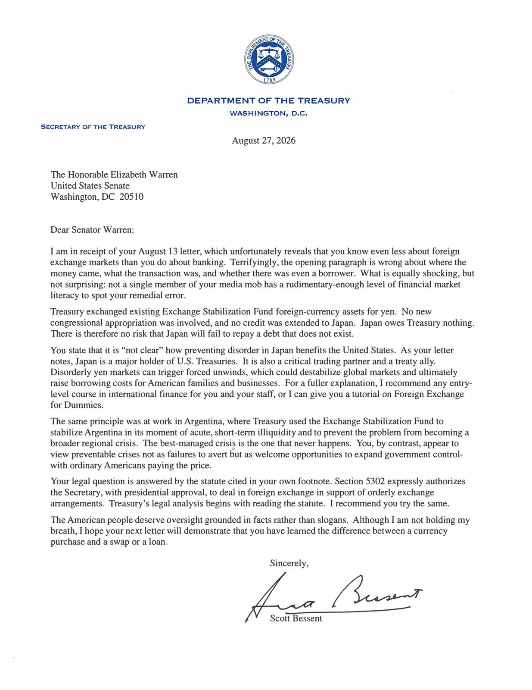
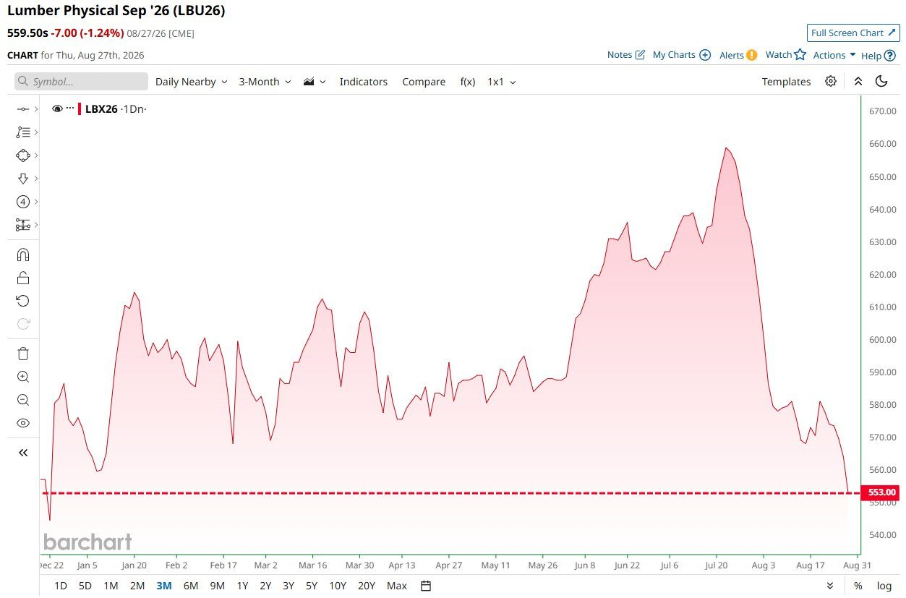
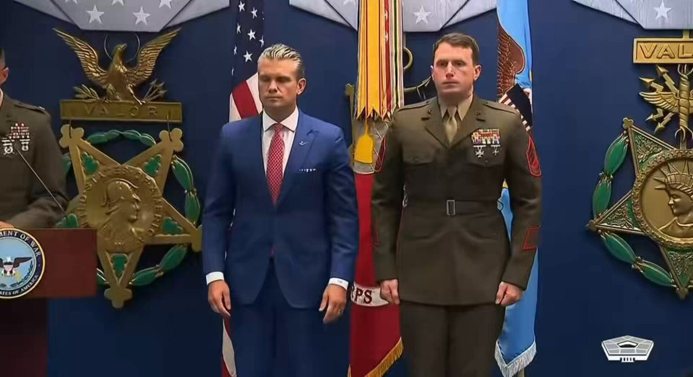

The Department of War recently concluded Technology Readiness Experimentation (T-REX) 26-3, bringing together warfighters, senior @DeptofWar leaders, members of Congress, and industry partners across GrandSKY and Camp Grafton in North Dakota.
T-REX 26-3 showcased counter-drone capabilities, including directed energy systems, and contested logistics technologies designed to augment the warfighter in austere environments.
T-REX provides a credible experimentation environment that reduces the distance between commercial innovation and military capability—enabling industry and the Department to cut through red tape, identify transition pathways and accelerate fielding lethal technology to the warfighter.
@SenKevinCramer @SenJohnHoeven
🚨 President Trump just CONFIRMED it: American astronauts WILL land on the moon before his term ends, with plans for a PERMANENT American settlement on the lunar surface
"Before the end of my term, American astronauts will return to the lunar surface."
"NASA has already begun to work on the first ever nuclear powered inter planetary spacecraft which will launch in 2028 on a mission to Mars."
"They're going to have a settlement. They're building a settlement up on the moon."
▶ Watch on XNEW: More than 100 organizations around the world, including ChatGPT-maker OpenAI and rival Anthropic, have signed an open letter calling for a global effort to “strengthen cyber defenses” against AI-powered cybersecurity threats
“We have a limited window to strengthen cyber defenses,” the letter says. “In the coming months, AI-enabled cyber attacks will become far more widespread and sophisticated as models around the world become increasingly capable.”
READ:
NEW: President Trump announces NASA is working on a nuclear-powered interplanetary spacecraft set to launch on a mission to Mars in 2028.
"This ship will be among the first of what will ultimately be a massive American Star fleet, making space travel almost as common as ocean travel today."
▶ Watch on XBREAKING: OpenAI, Anthropic, Google, & more than 100 others sign letter warning that AI-enabled cyberattacks are about to become "far more widespread & sophisticated."
JUST IN: Surgeons successfully remove a brain tumor using live AI guidance for the first time in history.
In her latest sciolistic letter to me, @SenWarren made it clear that she knows even less about foreign exchange markets than she does about banking.
What is equally shocking, but not surprising: not a single member of the media mob has a rudimentary-enough level of financial market literacy to spot her remedial error.
To reiterate: under @POTUS, the United States delivers for America’s trusted partners.
For a fuller explanation, I recommend Senator Warren take any entry level course in international finance for her and her staff, or I can personally give her a tutorial on Foreign Exchange for Dummies. Although I am not holding my breath, I hope her next letter will demonstrate that she has learned the difference between a currency purchase and a swap or a loan.

It’s amazing how negative the news is.
We’re creating the most advanced intelligence the world has ever known and it’s freely accessible so you can solve every day problems, we are curing cancer (even ugliness if you have a little money), and making space travel possible. You can live anywhere in the world and stay connected by phone or video. Literally instant communication. You can instantly translate any language. You can get technology that was unimaginable a few decades ago for a couple hundred bucks. You can listen to any music, video, or educational material with a click. Food is cheap and plentiful and you can even power an off grid home fully with just solar power. We have clean air and water. We even have advanced warning for many natural disasters.
“Ranchers and Farmers have always been a number one priority for me… I am authorizing legal documents to be drawn in order to allow Farmers and Ranchers to be given the right to PROCESS THEIR OWN FOOD. This should move quickly.” - President Donald J. Trump
BREAKING: Two lions are reportedly on the loose in Indiana, with authorities “unsure of where the lions even came from.”
🚨 HOLY CRAP! Treasury Sec. Scott Bessent is reportedly gearing up to REVOKE the tax-exempt status of nonprofits including George Soros' Open Society Foundation, CAIR (Council on American-Islamic Relations) and the SPLC — NYP
The operation might result in CIVIL PENALTIES too
Make it happen, Secretary Bessent! 🔥
The move could target MULTIPLE leftist nonprofits because they ABUSE their tax-exempt status.
This is MASSIVELY overdue!
This was made possible by a Trump executive order from last year. Bessent recently said:
"Treasury is expanding its efforts to identify organizations that abuse charitable and nonprofit structures as vehicles for illicit finance."
"We are examining where tax exempt status has been exploited, where charitable entities have become financial conduits for foreign influence activity and how those entrusted with stewardship of these organizations have instead enabled violence, where the evidence leads we will not hesitate to follow and of course we will hold these organizations, officers, directors, accountable and just as financial institution must know their clients they must know their grantees."
"That work is well underway."
🚨 IT'S OFFICIAL: Minnesota 3rd world fraudsters just got a combined 155 months in PRISON for their role in a $250M fraud scheme
Their names are EXACTLY as you'd expect! 😡
Abdihakim Ali Ahmed: 54 months Ahmed Abdullahi Ghedi: 65 months Ahmed Sharif Omar-Hashim: 36 months
DEPORT EVERY SOMALI PIRATE
▶ Watch on XFormer Iowa Nonprofit Program Director Sentenced to 18 Months in Federal Prison for Theft from a Federal Funds Recipient
Warsh on monetarism:
"Money matters. It’s not fashionable these days, but my view is that money has something important to do with monetary policy. We should pay attention to money created by the central bank and money that comes from the banking and financial systems. It’s true that financial innovations and other factors alter the mechanics that link the monetary base, the velocity of money, and the broader economy. But that is scarcely a reason to ignore the ultimate effects of money on financial conditions and prices."
BREAKING 🚨: Lumber
Lumber falls to its lowest price of the year 📉 📉 Timberrrrrrrrrrrrrrrrrrrrrrrrr

"On an average day, one in 10 young adults now has no in-person contact," per FT:
TODAY🚨: The SEC proposed amendments to Rule 3a12-8 to add the debt obligations of the European Union to the list of foreign government debt obligations designated as "exempted securities" solely for the purposes of futures marketing and trading.
Wages and salaries are at roughly 43% of U.S. gross domestic income in the first quarter of 2026, the lowest since the Great Depression began, per YF
JUST IN: New York Stock Exchange opens a new regional headquarters in Dallas as Texas’ “Y’all Street” financial hub continues to expand.
🚨 JUST IN: In a truly incredible moment, SecWar Pete Hegseth just PERSONALLY gave upgraded valor awards to US Marines who were DOWNGRADED by the Biden admin after they ran into danger in the 2021 Abbey Gate bombings
Biden tried HIDING his failure by throwing THEM under the bus.
Hegseth just gave them what they’re OWED 🇺🇸
God bless these patriots who ran TOWARD danger 🙏🏻

▶ Watch on XBREAKING:
Turkey says it will leave NATO if it does not defend it against Israel.
BREAKING: Venezuela has been discussing leaving OPEC with US officials, per Bloomberg.
This comes amid reports that the US is negotiating a deal to take a large stake in Venezuelan oil fields.
Some US officials reportedly envision an “oil powerhouse” built from an alliance between the US and Venezuela that would greatly diminish OPEC’s influence.
OPEC appears to be on the verge of losing its second member in four months.
🧵Major developments re: Donald Trump’s designs on Greenland:
Greenland's official genocide report finds a reasonable basis to believe Denmark violated the Genocide Convention by implanting Greenlandic girls with birth-control devices without consent.
Today, under Operation Economic Outcast, @FinCENnews proposed a rule that would revoke Banque Misr UAE’s correspondent banking access to U.S. financial institutions. Additionally, Treasury’s Office of Foreign Assets Control sanctioned Bank Melli Dubai manager Reza Mohammad Taeedi, along with a Hong Kong-based front company that has helped launder funds for a sanctioned Iranian exchange house. Operation Economic Outcast is severing the remaining financial lifelines that sustain the Iranian regime.
Treasury promised to sever every economic lifeline Tehran has left and finally end the threat of the Iranian regime. We also warned that Iran’s enablers cannot continue to enjoy access to the U.S. dollar and the global financial system. Banque Misr UAE decided to find out the hard way, and today, we are taking the first step in holding it accountable for its continued, egregious support of the Iranian regime.
Oil flows through the Strait of Hormuz have recovered to around two-thirds of pre-war levels, limiting the Iran war’s impact on global crude prices, according to Goldman Sachs
Great view of the Spanish patriots overrunning the invader camp.
JUST IN: 🇳🇴 Norway's King Harald V dies at 89 years old.
🚨 BREAKING: A federal appeals court has REJECTED Democrat Rep. LaMonica McIver's immunity defense after she ASSAULTED ICE agents in Newark, 2-1
FAFO!🔥
Video shows McIver, in a red jacket, committing FEDERAL FELONIES by striking MULTIPLE ICE agents during a fit of entitled rage
McIver faces 17 YEARS in prison on three counts (2 felony, 1 misdemeanor) of assaulting, resisting, impeding, and interfering with federal officers.
🚨 HOLY CRAP! Marco Rubio just found out that anti-ICE Antifa riots and violence are being supported by INTERNATIONAL TERROR GROUPS that are well-funded — one of which is located in ITALY
KNEW IT!!
Sanctions are now being levied and designations are being made. Rubio and Scott Bessent are stepping in 🔥
Every dollar from these groups must be frozen and mass arrests must be made for ANYONE involved.
We cannot solve America’s chronic disease epidemic if doctors graduate without understanding how food shapes health. Kentucky’s medical schools are changing that. By making nutrition a core part of medical education, they are preparing the next generation of physicians to prevent disease, treat its root causes, and help patients achieve lasting health.
WOW. The Canadian Broadcasting Corporation, a public broadcaster, reportedly sent an internal memo to staff that read:
"Do not refer to the Sept. 11 attacks as terrorist attacks."
Instead, they are to refer to 9/11 as just "hijackings" that caused "jet crashes in Washington, D.C., Pennsylvania and Manhattan."
Any agency in Canada that doesn’t publicly reject this bastardization of history, and an insult to the souls lost during our largest terrorist attack in US history will no longer have friend in this FBI… Not to mention our heroes that responded in the aftermath 🇺🇸
WE WILL NEVER FORGET 9-11
JUST IN: State Department reveals Portland Antifa used a militant tech network also used to support Hamas, Hezbollah, & Iran’s IRGC.
The goals of Stephen Miller are abundantly clear
BREAKING: 𝕏 reveals it uncovered a Chinese bot farm of roughly 200,000 accounts, including hundreds used to influence U.S. debate over AI data centers & energy policy.
Federal judge approves Bank of America's $72 million settlement with alleged Epstein victims